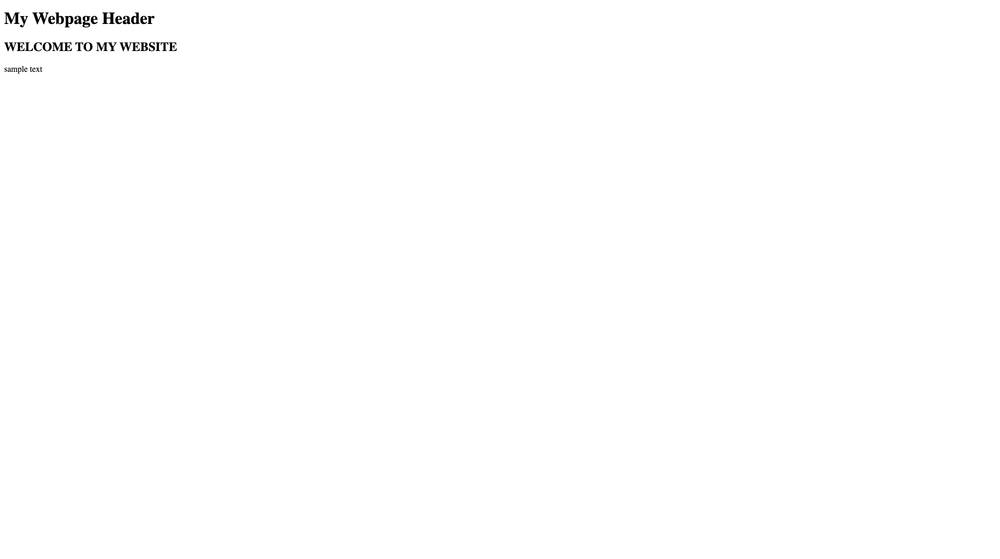
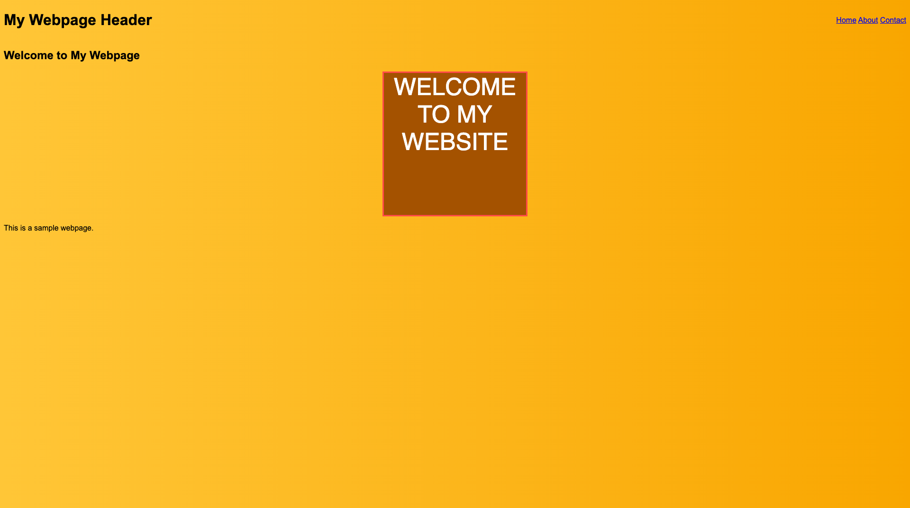
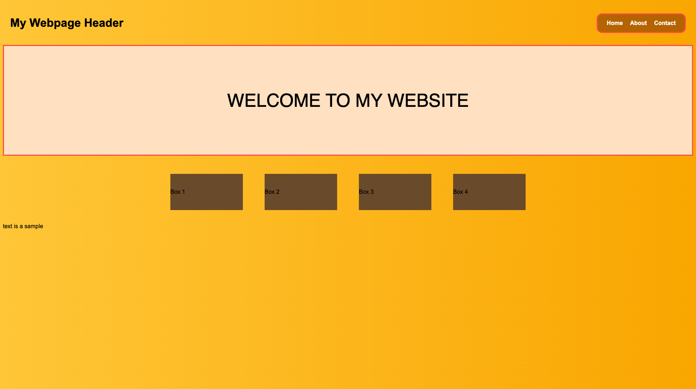
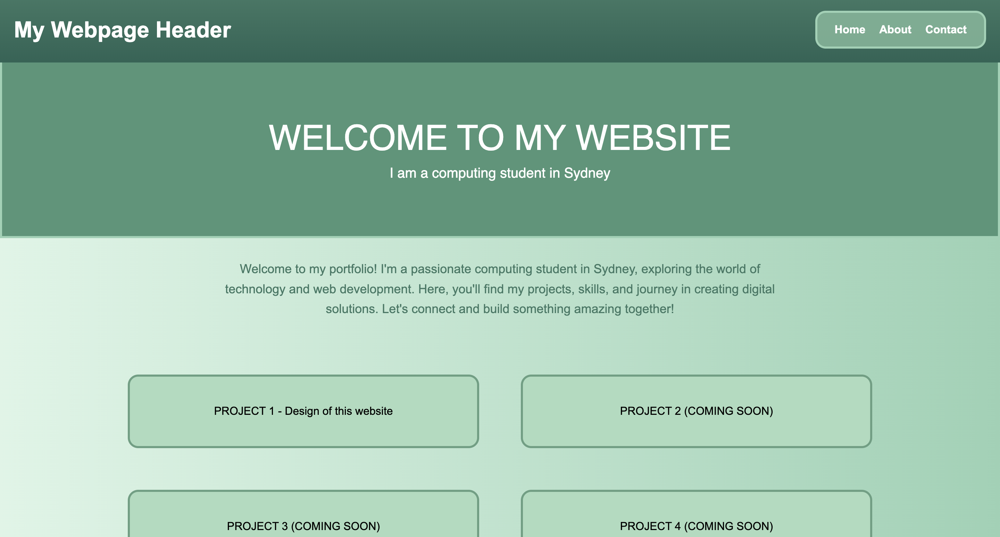

My Reflection
March 13 2026
The website started off with basically no plans. I spent the first 2 lessons thinking about what I had in mind. Over time it started forming into my vision. There was never any clear plan on what I wanted to do, I guess “going with the flow” built the website I am now so proud of. This is the first frame I made. Just some basic headers.

March 16-17 2026
I still wasn’t completely sure of what I wanted to really do. For example: I wasn’t sure what to do with my header and I wasn’t completely sure what to do with the text on the bottom. My main focus at the time was to incorporate some flex boxes to showcase my future projects. I also put in a temporary colour scheme and some links in the header which linked to nothing at the time.

March 23 2026
I was starting to get a better idea of what I wanted to do with the website. I utilised AI to learn how to animate the boxes sliding in and also to impliment various quality of life features over time. For example, the "welcome to my website" was now big and fat and looked better and the links at the top looked MUCH nicer.

March 26 2026
I changed the colour scheme (with the help of AI since im not artistically talented). I also added some introductory text to introduce myself and made the boxes interactive and much nicer to look at. The flexbox linking the project also took you to another page (which was this one). It had nothing at the time except the header, footer and some sample text. The links at the top still didn’t work at the time. With the header I added, a problem I found was that it wouldn’t stick to the top as you scrolled. That’s when I learnt the “position: sticky;” attribute.

March 27 2026
I was beginning to flesh out the ending of the project. I used my todo list at the bottom of my coding channel to set a clear plan to success. I started by finishing the footer and adding a credits/dedications page. The photo linked to the google classroom where I will get an A.

March 29 2026
By this point, I was satisfied with how the website looked. I shifted my focus towards the interactivity and overall site content. Though I still added fonts via google fonts. This was a big challenge for me since the top square for the "logo" wasn't showcasing the correct font. I ended up learning about how each google font was a mix of different fonts and required all at once. Quite annoying as I had to check over every line by hand for any typos. Obviously there was. For fun I also begun working on a secret page. It's really barebones and only has one song that is really unfinished. Completely unnecessary waste of an hour I could've had sleeping but whatever. I know about the audio tag now!!

March 30 2026
Now, the site was finished and ready for deployment. At the time I hadn't finished the reflection but I managed to finish it a few hours later. I also fixed up some more site bugs and tweaked around with the code to make the experience as good as I could make it.
Overall, I am really happy with how the website turned out. It was a fun experience to create and I learned a lot about HTML and CSS along the way. I am excited to continue improving the website and adding more content in the future and improving on the overall site as I learn more like Javascript, and Python.